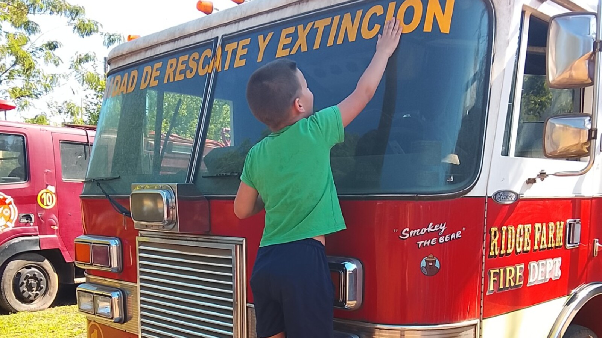

Meaningful Daily Activities for Adults With Intellectual Disabilities
An activity becomes meaningful because it fits the person—not because it looks educational, therapeutic, productive, or impressive to someone watching.

Search for meaningful activities for an adult with an intellectual disability, and you will find lists.
Gardening. Crafts. Cooking. Puzzles. Music. Exercise. Volunteering.
Those can all be wonderful.
They can also all be wrong for the person in front of you.
The challenge is not to fill every hour with respectable-looking activity. It is to help someone have days that contain interest, movement, comfort, choice, relationships, participation, and rest in proportions that work for them.
That requires observation. It requires support. And it requires letting go of the idea that an activity matters only when it produces a skill, a product, or a photograph that makes the program look good.
Meaning begins with the person
Adults without disabilities are allowed highly individual definitions of a worthwhile day.
One person gardens. Another watches baseball. Someone cooks for friends. Someone else takes a long drive, reorganizes a collection, attends church, listens to the same album, works overtime, or naps.
We do not expect every adult to enjoy identical activities.
Yet disabled adults are often offered a standardized menu selected by staff: crafts on Monday, life skills on Tuesday, music on Wednesday. The schedule may be neat while the person's preferences remain almost invisible.
Meaningful activity should begin with questions such as:
- What does this person approach without being prompted?
- What do they watch closely?
- What makes them smile, vocalize, become calm, or remain engaged?
- What places do they recognize and enjoy returning to?
- Which people do they seek?
- What kinds of movement, sound, texture, repetition, or novelty do they prefer?
- How do they show that they are finished?
For a nonspeaking adult, answers may appear through behavior rather than through a planning-meeting conversation. That does not make the preferences less real.
Engagement matters more than appearances
An activity can look impressive and mean very little to the participant.
A completed craft may have been assembled mostly by staff.
A smiling group photograph may capture one second of a difficult outing.
A volunteer role may provide good publicity while the person spends most of the shift waiting.
Conversely, a simple activity may be deeply engaging.
Watching buses.
Sorting objects.
Walking the same path.
Carrying groceries.
Opening and closing a gate.
Listening to a familiar song.
Touching the surface of a fire truck.
The photograph accompanying this article came from a quick day trip to Capiatá. Sam was interested in the fire truck, so he climbed up and explored it. There was no lesson plan. He did not need to turn the experience into a job skill. The interest itself was enough.
An activity does not become meaningful because an adult without a disability approves of it.
A useful activity menu includes different kinds of days
Instead of searching for one perfect list, families and providers can build a flexible menu across several areas.
Movement and sensory regulation
- walking, swimming, swinging, dancing, stretching, or pacing;
- water play, gardening, sand, textured materials, or safe heavy work;
- quiet rooms, rocking chairs, music, weighted items, or outdoor shade;
- carrying laundry, pushing a cart, moving boxes, or helping with household tasks.
Home and daily life
- choosing food, helping prepare a familiar meal, or setting the table;
- watering plants, feeding an animal, sorting laundry, or organizing belongings;
- shopping for a preferred item;
- personalizing a bedroom or choosing what happens in a shared space.
Community and relationships
- returning to a familiar shop, park, café, library, or congregation;
- eating with friends or family;
- attending a local event for a short, tolerable amount of time;
- volunteering, visiting, or participating in a club when genuinely desired.
Curiosity, creativity, and enjoyment
- music, drawing, photography, collecting, building, or simple experiments;
- trains, trucks, animals, maps, numbers, movies, sports, or other focused interests;
- day trips and unhurried opportunities to explore;
- games, technology, favorite shows, and activities that are simply fun.
The same person may want a highly active Tuesday and a very quiet Wednesday. A meaningful life needs options, not a rigid performance schedule.
Support is often what turns interest into participation
An adult may enjoy swimming but need help changing clothes, entering the pool, staying safe around water, and tolerating the ride home.
They may love a market but need transportation, money support, close supervision, help waiting, and a familiar exit plan.
They may enjoy cooking but need ingredients prepared, heat managed, and instructions shown one step at a time.
Without support, the activity may appear inaccessible. With too much control, the activity may cease to belong to the person.
The goal is not to remove help. It is to provide the amount and kind of help that makes genuine participation possible.
Research on person-centered planning has found suggestive, though not high-certainty, benefits for participation in activities, everyday choice, and community participation among people with intellectual disabilities. The uncertainty matters. No planning tool guarantees a meaningful life. But paying systematic attention to the person's preferences is better than assuming a generic schedule will fit.
Choice does not require an abstract conversation
Some adults cannot answer, "What would you like to do this afternoon?"
They may still choose between shoes, reach for one object, walk toward the door, turn away from a noisy room, bring someone a swimsuit, sit beside a familiar person, or refuse to get out of the vehicle.
Supporters can offer concrete options and observe.
Photos of two destinations may work better than a verbal question.
Showing two objects may reveal a preference.
Trying an activity briefly may provide better information than asking in advance.
Patterns over time matter more than forcing a decision in one moment.
Choice also includes stopping. A person who selected an activity should not be trapped there because staff expected it to last an hour.
Routine and novelty can work together
Routine is sometimes treated as the opposite of a rich life.
For many autistic people and adults with intellectual disabilities, predictable routines make exploration possible. Familiar meals, known people, a trusted vehicle, a visual sequence, or a consistent return time can reduce the uncertainty around trying something new.
The goal is not endless novelty. It is enough stability that the person can safely encounter the world at their own pace.
Someone may visit the same park every week and occasionally explore a different path.
Someone may order the same food at a familiar restaurant while becoming known by the staff.
Someone may alternate home days with short community outings.
Repetition does not erase meaning. Sometimes repetition is how meaning deepens.
Not every activity should be therapy
Therapy can help a person communicate, move, tolerate necessary care, manage pain, or gain skills that improve life.
But adulthood should not become one continuous intervention.
An adult can bake because they like the smell.
Walk because movement feels good.
Paint without improving fine-motor skills.
Visit a friend without practicing social goals.
Watch a show without earning it.
Some activities should be allowed to remain recreation, relationship, comfort, worship, curiosity, or pleasure.
Productivity should not become the price of belonging
Families are often encouraged to imagine work as the center of adult life. Employment can offer income, structure, relationships, contribution, and pride. When an adult wants to work and can do so with appropriate support, that opportunity matters.
But work is not the only valid source of meaning.
At Casa de SAM, the future bakery, farm, gardens, and other ventures may create optional ways for some residents to participate. A resident might enjoy delivering napkins, gathering fruit, greeting familiar people, feeding an animal, or helping with a repeated task.
Those opportunities must never become an expectation that residents produce revenue or prove their worth. The bakery exists to help sustain the home. Residents do not exist to sustain the bakery.
Signs an activity may actually be meaningful
- The person approaches, anticipates, or returns to it.
- They show sustained attention or comfortable engagement.
- The activity reflects a known interest, relationship, sensory preference, or value.
- The person can influence how it happens.
- Support helps participation without taking over.
- Refusal and fatigue are respected.
- The activity creates connection, enjoyment, regulation, contribution, curiosity, or comfort.
- It still has value even if no skill improves and nothing is produced.
No single sign proves enjoyment. Families and staff should watch patterns, compare observations, consider pain or overload, and remain willing to revise their interpretation.
What you can do this week
Create an interest inventory from observation
List ten things the person approaches, watches, repeats, requests, carries, listens to, or becomes calm around. Do not limit the list to conventional hobbies.
Track engagement for three ordinary activities
Record how the person behaves before, during, and after each activity. Note approach, attention, stress, refusal, recovery, and whether they seek the activity again.
Adapt one inaccessible activity
Choose something the person seems to enjoy but rarely does. Identify the barrier—transportation, noise, waiting, cost, communication, personal care, safety—and test one support.
Offer one concrete choice
Use two objects, photographs, locations, or clearly different options. Observe the response without demanding a spoken answer.
Protect one activity that has no productive outcome
Make room this week for something the person enjoys simply because they enjoy it.
Long-term questions to consider
- Who knows this person's interests well enough to teach new caregivers?
- How will preferences be documented without turning the person into a checklist?
- Which activities depend on aging parents for transportation or preparation?
- How will those supports continue?
- Does the person's week include movement, rest, relationships, home life, and community?
- How will increasing mobility, health, sensory, or behavioral needs change participation?
- Can the person decline without losing future opportunities?
- Are work and volunteering offered as choices or treated as measures of worth?
- Which familiar routines should be protected during a residential transition?
- How will we notice when a once-loved activity is no longer enjoyable?
Casa de SAM's position: ordinary interest is enough
I do not know what Sam's favorite activities will be when he is forty.
I know I do not want his days selected according to what photographs well or makes other people feel that he is accomplishing enough.
I want people around him who notice.
Who know whether he wants to move or rest.
Who recognize when he is fascinated, when he is tolerating, and when he is finished.
Who can turn an interest into an opportunity without converting every pleasure into therapy.
Some days may involve the bakery, animals, a pool, church, a market, a day trip, or friends.
Other days may involve a familiar chair, the same video, a snack, a walk, and very little novelty.
Both can belong in a meaningful life.
The goal is not to keep an adult busy. The goal is to help them have days that feel like their own.
Sources and further reading
- Centers for Medicare & Medicaid Services guidance on community integration in residential and adult day settings.
- CMS guidance on person-centered planning in adult day and residential settings.
- Ratti V, et al. The effectiveness of person-centred planning for people with intellectual disabilities: a systematic review. Research in Developmental Disabilities. 2016.
- Stav WB, et al. Systematic review of occupational engagement and health outcomes among community-dwelling adults. American Journal of Occupational Therapy. 2012.
About Casa de SAM
Casa de SAM is a developing vision for a lifelong residential community in Paraguay for adults with autism and other developmental disabilities who need substantial daily support. The project is being designed around safety, flexible daily rhythms, meaningful choice, relationships, and belonging that does not have to be earned through productivity.
Casa de SAM is not yet an operating nonprofit or residential provider. We are currently researching, documenting the vision, and looking for people who may eventually help build it responsibly.
This article provides general educational information and describes Casa de SAM's developing philosophy. It is not individualized medical, therapeutic, educational, behavioral, or program-placement advice. Activities should be selected and supported according to the individual's health, communication, preferences, abilities, risks, and changing needs.